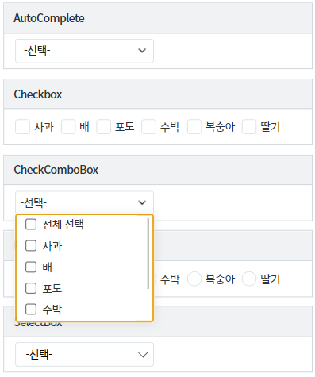
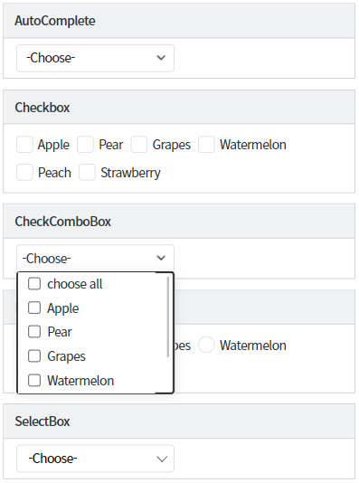
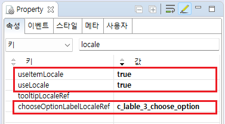
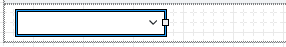
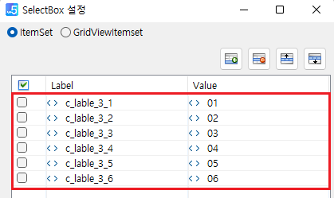
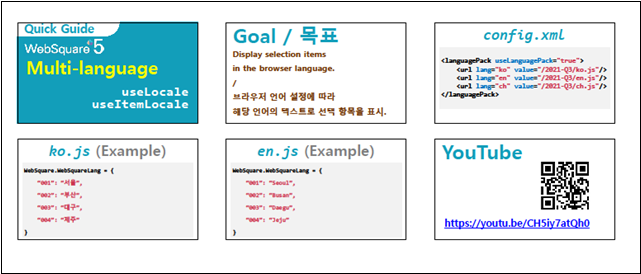
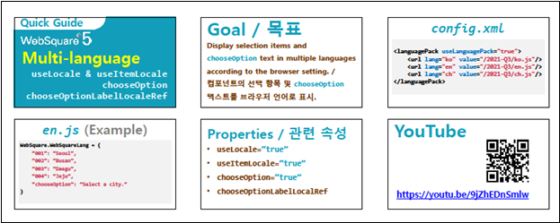

[컴포넌트 공통] 클라이언트 다국어 적용하기(목록) - useItemLocale
1개요
클라이언트 다국어 설정에 관한 속성 중 하나인 localeRef 속성 사용 예시입니다.
useItemLocale 속성은 목록을 출력하는 컴포넌트 중 목록을 소스에 하드 코딩해야 하는 경우에 사용됩니다.
useItemLocale 속성이 있는 대표적인 컴포넌트는 AutoComplete, Checkbox, CheckComboBox, MultiSelect, Radio, SelectBox 입니다.클라이언트 다국어는 브라우저의 언어 설정에 따라 동작합니다.
브라우저의 언어 설정을 변경한 경우 브라우저를 전체 새로고침 해야 변경된 언어가 반영됩니다.
클라이언트 다국어 설정에 대한 자세한 내용은 아래의 참고 문서의 온라인 링크를 확인하시거나,
웹스퀘어5 심화 가이드 문서의 다국어 설정 가이드를 참고하시기 바랍니다.
2구현된 기능
AutoComplete, Checkbox, CheckComboBox, Radio, SelectBox 컴포넌트에 useItemLocale 속성을 사용하여 브라우저 언어에 따라 목록을 한국어, 영어로 출력하기
3예제 테스트 방법
이 예제는 브라우저의 언어 설정에 따라 출력되는 문자열이 다릅니다.
- 한국어 설정
1. 브라우저의 언어 설정을 한국어로 설정합니다.
아래의 설정은 Chrome 브라우저의 예시입니다.
[Chrome 브라우저의 언어 설정 예시]

브라우저 설정을 변경한 경우에는 브라우저를 전체 새로고침을 해야 적용됩니다.
2. 출력된 목록 확인하기
[한국어로 설정된 결과 예시]

- 영어 설정
1. 브라우저의 언어 설정을 한국어로 설정합니다.
아래의 설정은 Chrome 브라우저의 예시입니다.
[Chrome 브라우저의 언어 설정 예시]

브라우저 설정을 변경한 경우에는 브라우저를 전체 새로고침을 해야 적용됩니다.
2. 출력된 문자열 확인하기
[영어로 설정된 결과 예시]

4구현 예시
4.1다국어 정의 하기
언어팩 JS 파일에 화면에서 사용할 키(Key)와 값(Value)을 정의합니다. 예제 프로젝트의 경우 한국어, 영어가 설정되어있으며 파일 위치는 아래와 같습니다.
한국어 : [예제 프로젝트]/WebContent/lang/ko.js
영어 : [예제 프로젝트]/WebContent/lang/en.js
//한국어 - ko.js 예시 //화면에서 사용할 문자열을 등록합니다. //c_lable_3_1, c_lable_3_2, c_lable_3_3, c_lable_3_4, c_lable_3_5, c_lable_3_6 WebSquare.WebSquareLang = { "c_lable_3_choose_option" : "-선택-", "c_lable_3_1" : "사과", "c_lable_3_2" : "배", "c_lable_3_3" : "포도", "c_lable_3_4" : "수박", "c_lable_3_5" : "복숭아", "c_lable_3_6" : "딸기" };
//영어 - en.js 예시 //화면에서 사용할 문자열을 등록합니다. //c_lable_3_1, c_lable_3_2, c_lable_3_3, c_lable_3_4, c_lable_3_5, c_lable_3_6 WebSquare.WebSquareLang = { "c_lable_3_choose_option" : "-Choose-", "c_lable_3_1" : "Apple", "c_lable_3_2" : "Pear", "c_lable_3_3" : "Grapes", "c_lable_3_4" : "Watermelon", "c_lable_3_5" : "Peach", "c_lable_3_6" : "Strawberry" };
참고 문서 를 통해 동작 방식과 설정 등, 상세 내용을 확인할 수 있습니다.
4.2속성 정의하기
[필수] useLocale="true" //[default : false, true] 클라이언트 다국어 설정의 사용 여부를 정의합니다.
[필수] useItemLocale="true" //아이템 목록에 클라이언트 다국어를 적용할 지의 여부를 정의합니다.
[선택] chooseOptionLabelLocaleRef="c_lable_3_choose_option" //다국어 KEY
그림 1.웹스퀘어5 SP5 스튜디오의 Property View(속성창) 예시

<!-- selectbox의 소스 본문 예시 --> <xf:select1 useLocale="true" useItemLocale="true" chooseOptionLabelLocaleRef="c_lable_3_choose_option" > <!-- 중략 --> </xf:select1>
4.3목록(Item)에 다국어 KEY 정의하기
- 1. 스튜디오의 디자인탭에서 컴포넌트를 더블클릭합니다.
아래의 이미지는 디자인탭에서 Selectbox 컴포넌트를 선택했을 때의 예시입니다.

- 2. 목록(Item)에 다국어 KEY를 정의합니다.
아래의 이미지는 디자인탭에서 Selectbox 컴포넌트의 Item을 설정하는 예시입니다.

1. 정의한 키에 해당하는 값(Value)가 없는 경우 global_undefined가 출력됩니다.
2. 반드시 useLocale 속성이 "true"로 설정되어야 localRef 속성이 동작합니다.
예시) useLocale="true"
5주요 API
useItemLocale
chooseOptionLabelLocaleRef
useLocale
6참고 문서
[웹스퀘어5 심화 가이드] 다국어 설정 가이드
링크 : https://docs1.inswave.com/sp5_user_guide/73c59bba42ccbcd4#cbaa60bf61a91931
[웹스퀘어5 심화 가이드] 선택 항목 다국어 (useLocaleItem)
링크 : https://docs1.inswave.com/sp5_user_guide/73c59bba42ccbcd4#dbaefe9ffa3b7f21
7참고 동영상
선택 항목 다국어 (useLocaleItem)
링크 : https://youtu.be/CH5iy7atQh0

선택 항목 및 chooseOption 다국어 (useItemLocale & chooseOptionLabelLocaleRef)
링크 : https://youtu.be/9jZhEDnSmlw
